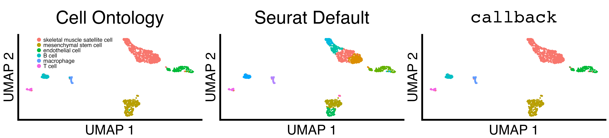
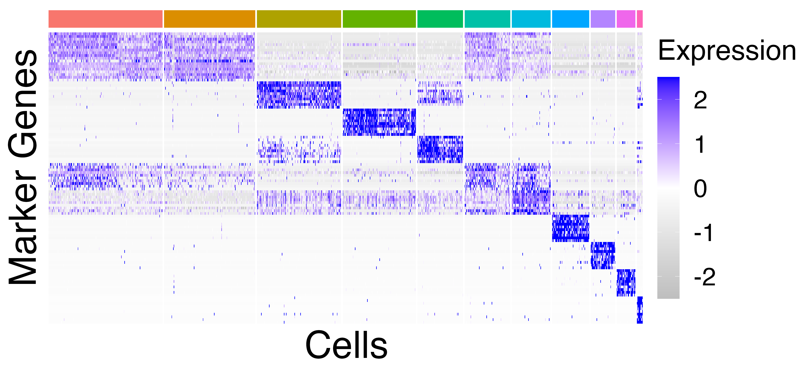
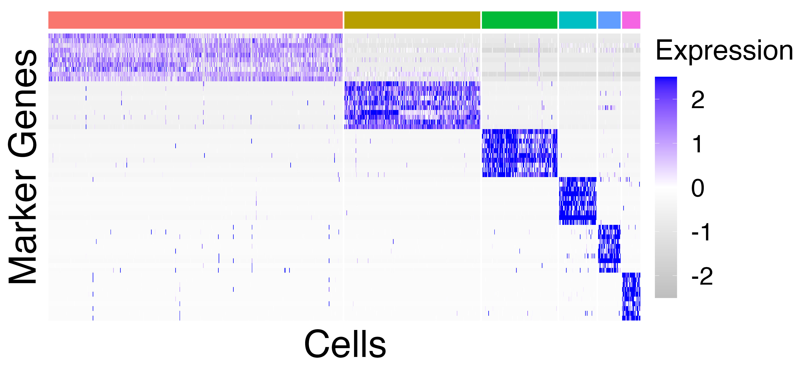
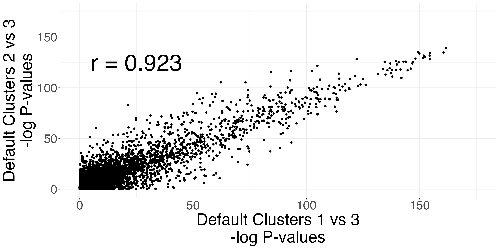
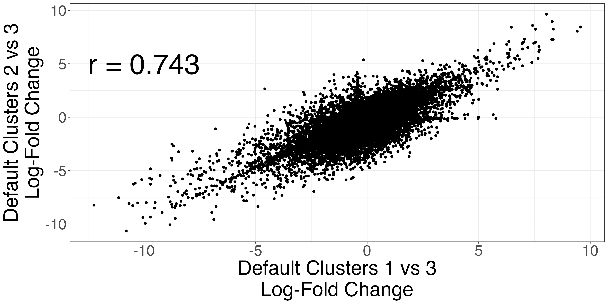
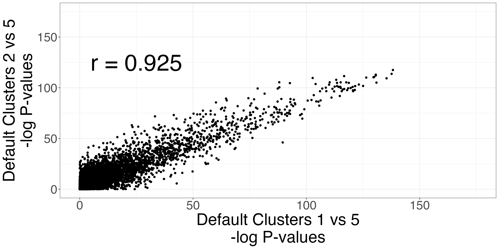
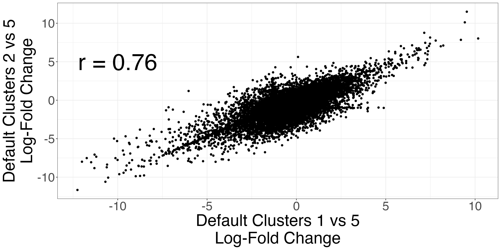
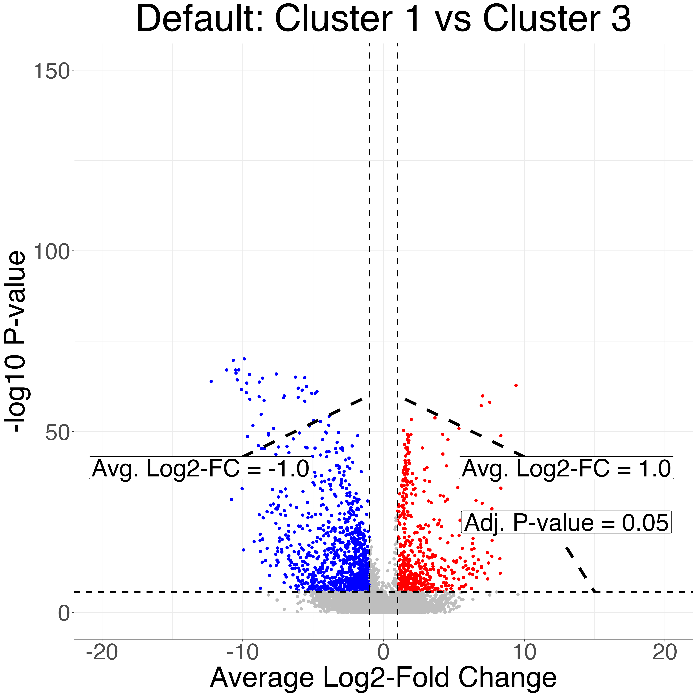
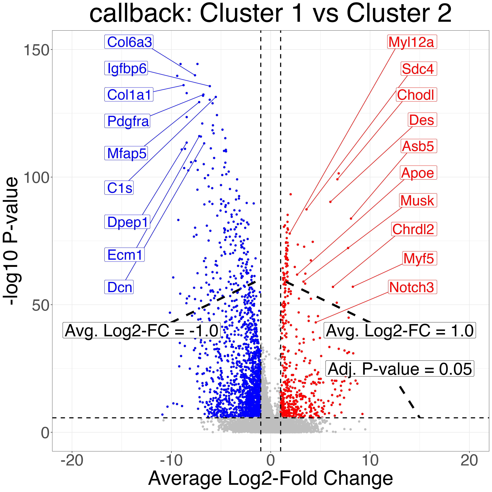

5. Avoiding Over-clustering Leads to Improved Hypothesis Generation for Downstream Analyses (Figure 3)
5_figure3.Rmd
suppressPackageStartupMessages({
library(callbackreproducibility)
library(ggplot2)
library(patchwork)
library(grid)
})
mesenchymal_stem_cells_marker_genes <- c(
"Col6a3",
"Col1a1",
"Igfbp6",
"Pdgfra",
"C1s",
"Mfap5",
"Ecm1",
"Dcn",
"Dpep1"
)
skeletal_muscle_satellite_cell_marker_genes <- c(
"Des",
"Chodl",
"Myl12a",
"Asb5",
"Sdc4",
"Apoe",
"Musk",
"Myf5",
"Chrdl2",
"Notch3"
)First, we load the limb muscle seurat object and scale it for plotting the heatmap.
limb_muscle <- readRDS("Limb_Musclecluster_results_seurat.rds")
limb_muscle <- Seurat::ScaleData(limb_muscle, features = rownames(limb_muscle))Next, we sort the cell ontology classes factors so that the cell type with the largest number of cells is first and the cell type with the fewest smallest is last.
# sort levels by size of group (limb_muscle)
limb_muscle@meta.data$cell_ontology_class <- as.factor(limb_muscle@meta.data$cell_ontology_class)
sorted_limb_muscle_clusters <- names(sort(summary(as.factor(na.omit(limb_muscle@meta.data$cell_ontology_class))), decreasing = TRUE))
limb_muscle@meta.data$cell_ontology_class <- factor(limb_muscle@meta.data$cell_ontology_class, levels = sorted_limb_muscle_clusters)We plot and save UMAP scatterplots of the Cell Ontology Class, the
Seurat default clusters, and the callback clusters.
fig_3_umap_grid <- fig3_scatter_plots(limb_muscle, "limb_muscle", legend_pos = c(0.1, 0.8))
ggplot2::ggsave("fig_3_umap_grid.png", fig_3_umap_grid, width = 4.4 * 2^11, height = 1 * 2^11, units = "px")
We plot and save heatmaps of the marker genes for the Seurat default
clusters and the callback clusters.
heatmaps = fig3_heatmaps(limb_muscle, "limb_muscle")
ggplot2::ggsave("limb_muscle_callback_heatmap.png", heatmaps$callback_heatmap, width = 1.4 * 1.5 * 2^11, height = 1.3 * 1.5 * 2^10, units = "px")
ggplot2::ggsave("limb_muscle_default_heatmap.png", heatmaps$default_heatmap, width = 1.4 * 1.5 * 2^11, height = 1.3 * 1.5* 2^10, units = "px")| Seurat Default Clusters | callback Clusters |
|---|---|
|  |  |
The Seurat clusters appear over-clustered. We compare the test statistics produced from differential expression testing between two of the skeletal mucle satellite cell clusters and two of the mesenchymal stem cell clusters. The P-values and log-fold changes values for each comparison have high similarity.
scatters3 <- fig3_p_value_scatterplot(limb_muscle,
default_cluster1a = 1,
default_cluster1b = 2,
default_cluster2 = 3)
ggplot2::ggsave("fig3_pval3_scatterplot.png", scatters3$p_value_scatterplot, width = 2 * 2^11, height = 2^11, units = "px")
ggplot2::ggsave("fig3_logfc3_scatterplot.png", scatters3$lfc_scatterplot, width = 2 *2^11, height = 2^11, units = "px")
scatters4 <- fig3_p_value_scatterplot(limb_muscle,
default_cluster1a = 1,
default_cluster1b = 2,
default_cluster2 = 5)
ggplot2::ggsave("fig3_pval4_scatterplot.png", scatters4$p_value_scatterplot, width = 2 * 2^11, height = 2^11, units = "px")
ggplot2::ggsave("fig3_logfc4_scatterplot.png", scatters4$lfc_scatterplot, width = 2 * 2^11, height = 2^11, units = "px")| P-value comparison | LFC comparison |
|---|---|
|  |  |
| P-value comparison | LFC comparison |
|---|---|
|  |  |
Finally, we do differential expression testing between the
callback cluster corresponding to skeletal mucle satellite
cells and the callback cluster corresponding to mesenchymal
stem cell cluster as well as two of the Seurat clusters that correspond
to the same cell types. Notice that the P-values produced after
clustering with callback are more significant due to the
increased sample size from correctly clustering the two cell types.
volcanos = fig3_volcano_plots(limb_muscle, "limb_muscle", callback_cluster1 = 1,
callback_cluster2 = 2,
default_cluster1 = 1,
default_cluster2 = 3,
ymax=150,
y_increment = 100,
genes_to_label_left = mesenchymal_stem_cells_marker_genes,
genes_to_label_right = skeletal_muscle_satellite_cell_marker_genes)
ggplot2::ggsave("limb_muscle_volcano_plot_default.png", volcanos$volcano_default, width = 2^12, height = 2^12, units = "px")
ggplot2::ggsave("limb_muscle_volcano_plot_callback.png", volcanos$volcano_callback, width = 2^12, height = 2^12, units = "px")| Seurat Default Clusters | callback Clusters |
|---|---|
|  |  |